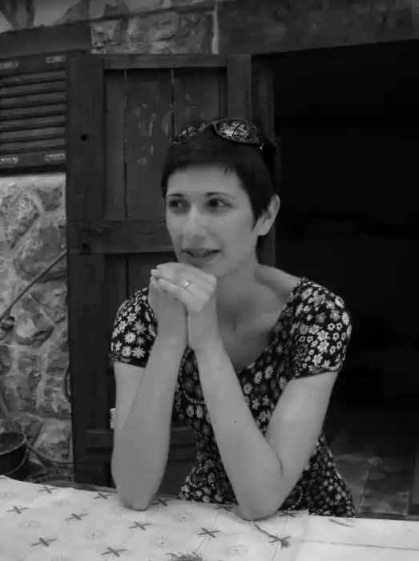

Катаріна Соломун, справжнє ім'я Тамара Модрич-Загорац— хорватська письменниця, перекладачка, редакторка.
Народилася 1976року в місті Рієка, Хорватія. Вищу освіту отримала за фахом хорватська мова й література. Після університету працювала коректором і редактором у ЗМІ та видавництвах. 2005 року разом з чоловіком Міланом Загорацем заснувала видавництво Studio TIM, де працює і зараз. Живе з чоловіком і сином у Рієці.
Як редактор опрацювала більше 100 видань у різних видавництвах. Окрім того, переклала низку творів з італійської мови, зокрема Нессії Ланіадо ("Хто тебе навчив поганого?", "Мені подобається гратися з іншими дітьми", "Дитячі обмани", "Дитячі запитання"), Паоли Ді П'єтро ("Як пережити школу своєї дитини"), Сабріни Рондінеллі ("Ходжу, бігаю, літаю") і багатьох інших. У Хорватії видано її збірку вінтажних кулінарних оповідань – легкі й смачні рецепти домашніх страв на тлі певних сюжетів з життя улюбленого міста. Далі вийшов роман "Виставлю тебе на Фейсбук!", дуже схвально сприйнятий читачами й критикою. Роман увійшов у короткий список конкурсу Бібліотеки Задара на найкращу книжку 2018 року, а також здобув номінацію як одна з найкращих книжок минулого року в списку Хорватського бібліотечного товариства. Книжку перекладено англійською та українською.